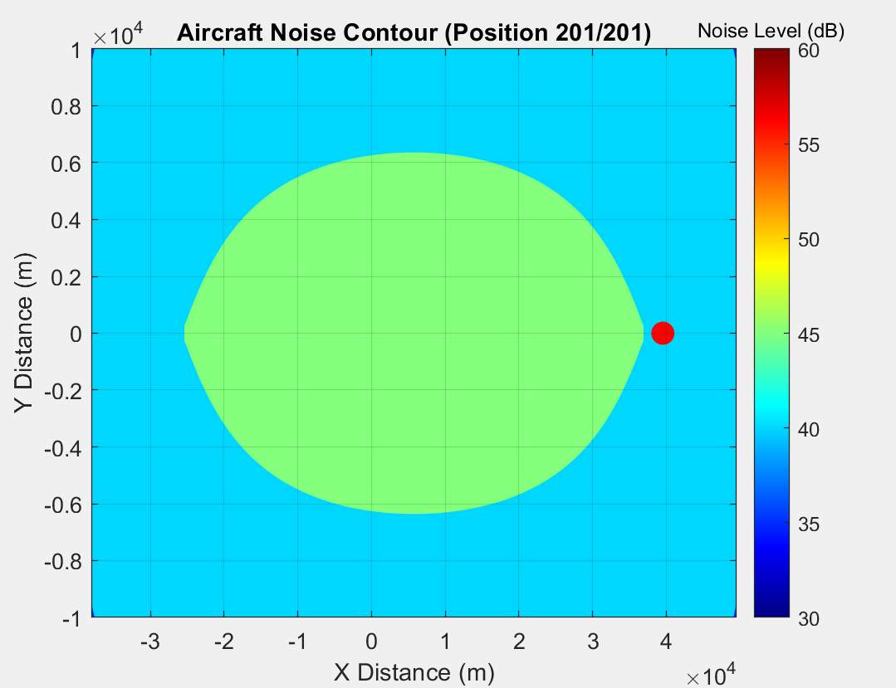
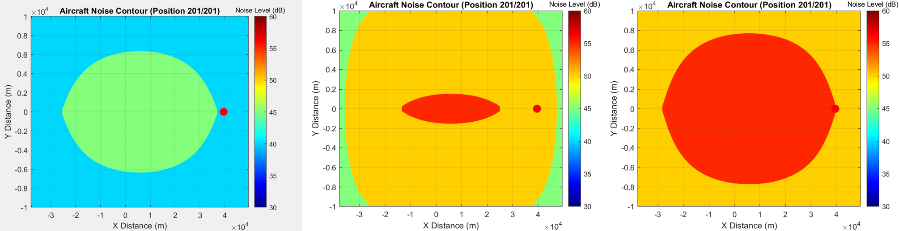

Problem
For the Technology for Sustainable Aviation module, I built a grid-point method tool in MATLAB to compute aircraft noise contours around an airport, using real Noise-Power-Distance (NPD) data rather than a simplified point-source model. The tool needed to handle three cases: a single aircraft flyover, several different aircraft compared side by side, and a full landing-takeoff cycle with a realistic descent-to-climb trajectory. I also implemented the lateral directivity function that turns a plain circular footprint into a realistic, flight-path-aligned contour.
Approach
The grid-point method lays a mesh of observation points over the ground and works out the noise each one receives from the aircraft at every position along its flight path. For each grid point and each aircraft position, the tool computes the slant distance, looks up the corresponding noise level by interpolating ANP legacy NPD data against power setting and distance, corrects it for lateral directivity, then accumulates the contribution across the full trajectory.
I implemented the directivity correction directly. The azimuthal angle from the aircraft to each grid point, φ = atan2(Y − ya, X − xa), feeds a dipole directivity term D(φ) = |cos φ|, which gives a final corrected noise level Lfinal = Lnoise + 10·log₁₀D(φ). That correction is what stretches a single-flyover contour into the lens shape in the results below, rather than leaving it a plain circle.
The tool itself is two MATLAB scripts chained together. One discretises a flight path, approach, descent, takeoff, into 10-second motion steps with smoothly interpolated altitude and airspeed. The other runs the grid-point calculation over that path and renders the noise contour as both a static plot and an exported video.
Result
A single flyover of a baseline A350-941 at 10,000 ft and 200 knots gave a noise footprint of roughly 40–45 dB, stretched along the flight path by the directivity correction:

Running the same calculation for a Boeing 777-300ER and a Boeing 747-400 at their own typical approach conditions showed how much aircraft type and altitude change the footprint. The 747, lower and louder, pushes the whole grid into the 55–60 dB band. The 777 sits in between:

The full landing-takeoff cycle for the A350, shown at the top of this page, is the tool's most demanding test: a custom-discretised descent-to-landing-to-climb trajectory run through the same grid-point calculation, accumulating noise from every position along the path rather than just one. The result peaks above 80 dB directly under the flight path and falls off sharply to either side, roughly the shape you'd expect from a real runway noise contour.
Limitations
The method assumes a flat, homogeneous atmosphere with no ground reflection, no weather correction, and lateral directivity only. Longitudinal effects, like engine noise on the takeoff roll, aren't captured at all. It's also an open-form solution, so it's computationally expensive: every grid point needs its own NPD interpolation for every aircraft position along the path. Two specific errors the report flags are worth naming. Finite Segment Error comes from interpolating noise between grid points instead of solving at infinite resolution. Segment Interaction Error comes from not accounting for the noise contribution of adjacent flight path segments, which would push real exposure higher than the tool predicts. The tool also models noise intensity at an instant, not cumulative exposure duration, and it needs real GPS motion-tracking data to drive a genuinely realistic flight path rather than an idealised one.